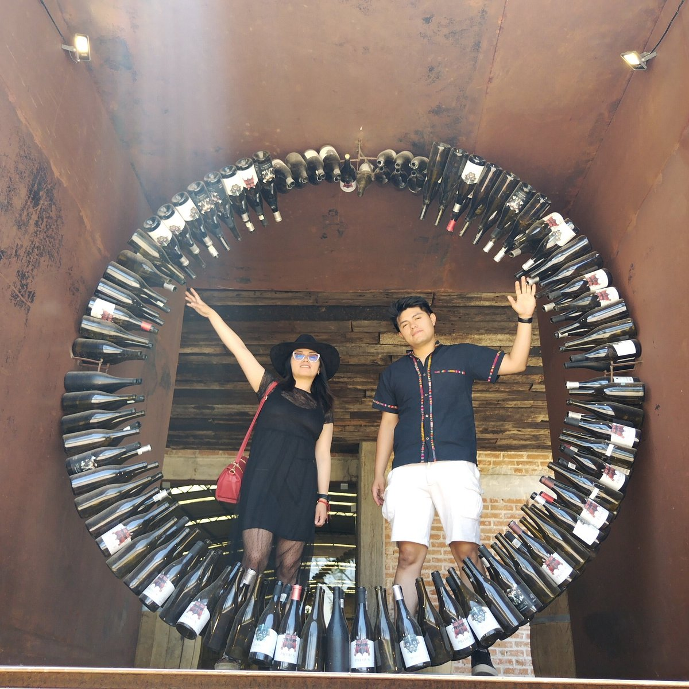
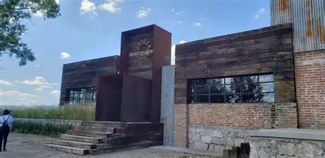
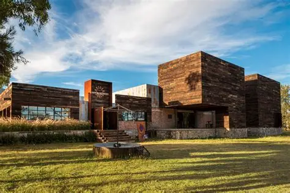
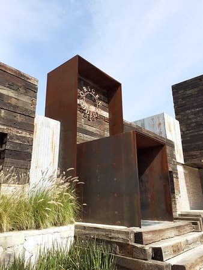
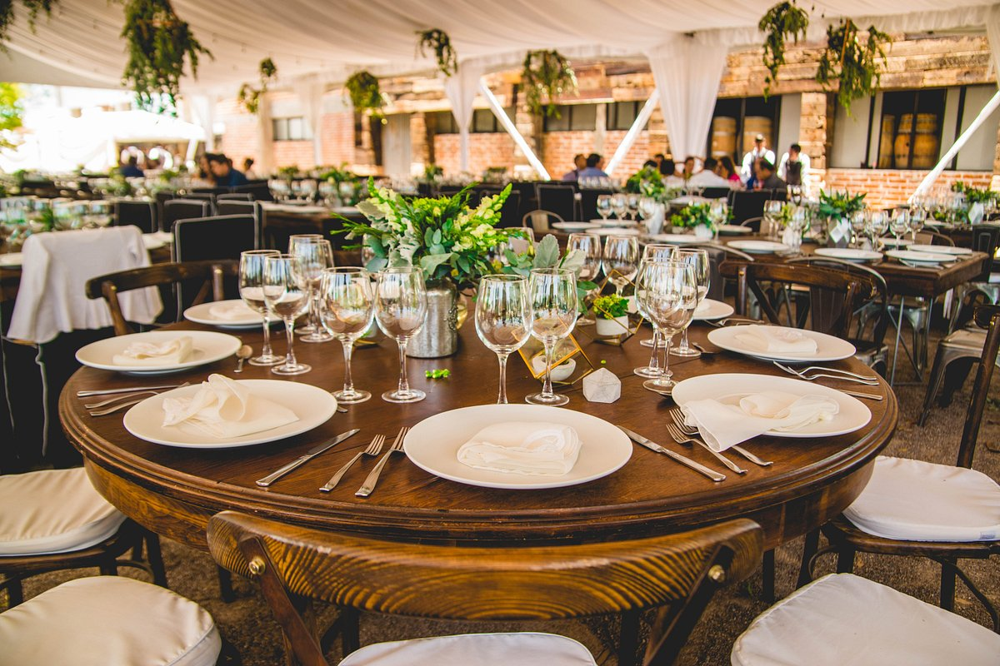

Aquí no solo caminas entre parras...
En Bodegas Origen vivirás una experiencia única entre viñedos , barricas y aromas que representan la
escencia vintinícola de Aguascalientes.
Aquí puedes conectarte con el vino desde su origen cada recorridos nos permite descubrir la tradición, la pasión
y el proceso artesanal detras de cada botella, conectando a los visitantes con la riqueza cultural del la región.
Camina entre parras, y dejate envolver por un ambiente elegantes y natural que convierte cada visita en un recuerdo
inolvidable , la experiencia culmina con una cata guiada de vinos, donde podras digustar sabores que nacen directamente de
esta tierra.
Bodegas Origen

Degusta vinos locales con sabores auténticos y aromas únicos.
Camina entre parras y descubre el origen de cada botella.
Disfruta paisajes naturales ideales para fotografías inolvidables.
Visítanos y descubre nuestros vinos artesanales en un ambiente natural. Te esperamos para que vivas una experiencia única entre viñedos.



